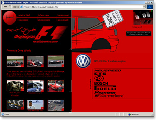
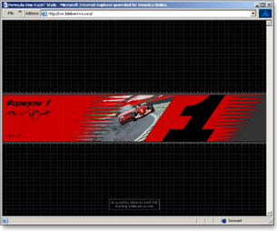

Formula One Racing Style is a personal site dedicated to auto racing.

Old style frame-based interface

Splash page
February 28, 2003
Formula One Racing Style is a personal site dedicated to auto racing.

